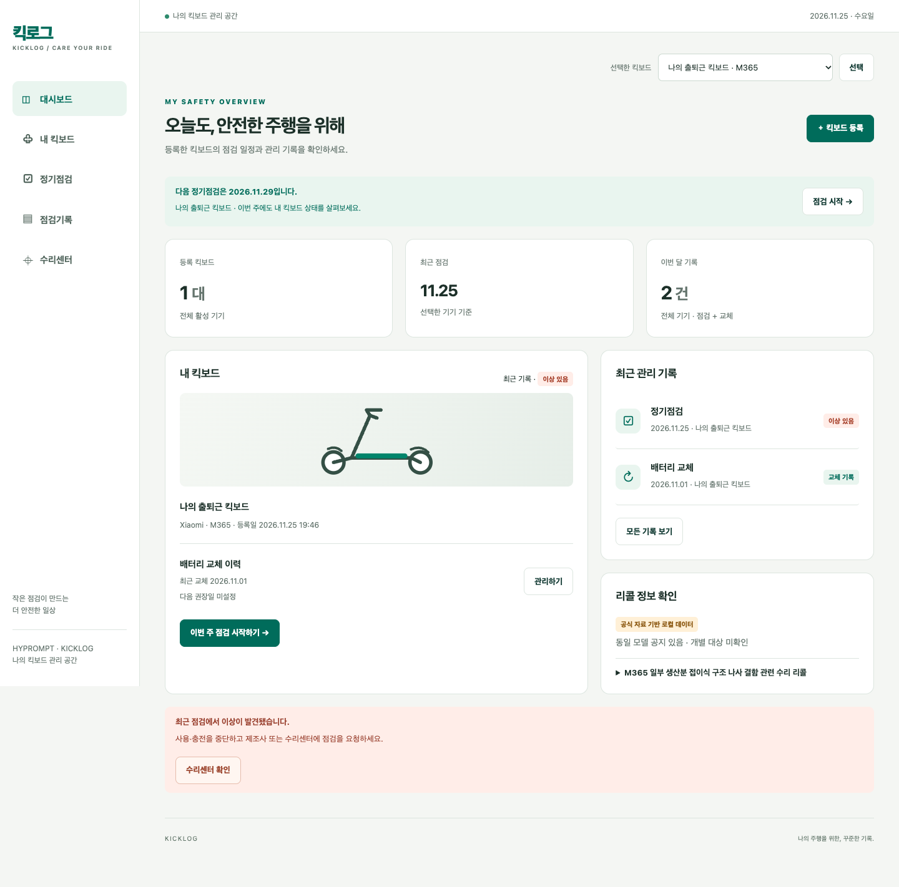
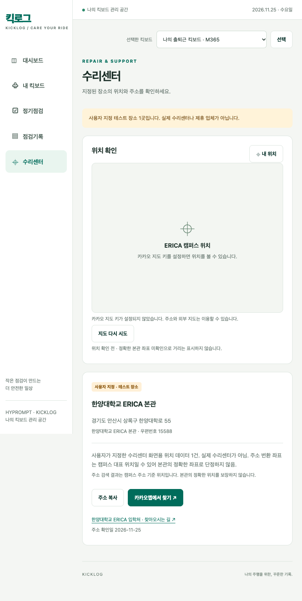

2026.11.25 · 설계 V1.1 기준 · Flask / Jinja2 / SQLite / SQLAlchemy
5개 메뉴와 기기 등록·수정·보관, 주간 점검, 교체 이력, 기록 필터·정정 메모·한글 PDF, ERICA 위치 카드를 구현했습니다. 기본 DB는 기기 0대로 시작합니다. 아래 화면과 PDF는 별도의 브라우저 검수 DB에서 만든 예시입니다.
| 기준 | 결과 | 검증 내용 |
|---|---|---|
| A01 첫 실행 | 통과 | 로그인 없이 5개 메뉴·0대·첫 등록 안내. Flask 테스트와 빈 DB 브라우저 화면. |
| A02 등록·지속성 | 통과 | 기기·일정·초기 교체 원자적 저장, 미래 날짜·필수값·사양 연결 검증. 동일 SQLite로 앱을 재생성해 기록 유지 확인. |
| A03 다기기 | 통과 | 2대 등록 후 선택 전환, 기록 기본 필터·점검 대상 유지. 전체 통계와 선택 기기 정보를 구분. |
| A04 교체 이력 | 통과 | 실제 교체일 최신순 조회, 지연 입력·초기 교체일 수정, 권장일 자동 생성 없음. |
| A05 점검 입력 | 통과 | 4개 결과 기준 진행률, 별도 충격·침수 필수, 이상 메모 필수. 미선택·미래일 서버 검증과 입력값 유지. |
| A06 결과·중복 | 통과 | issue → unknown → ok 집계, 이상 결과 저장 및 경고, 폼 토큰 동일 요청은 1건. 새 폼은 새 점검으로 저장. |
| A07 일정 | 통과 | 11.25 등록 → 11.29 예정, 조기 입력·11.29 완료·12.02 지연 완료·11.22 과거 추가, 요일 변경 이력, 서울 자정 경계. |
| A08 필터·보관 | 통과 | 양끝 날짜 포함, 두 유형, 월말 보정, 20건 페이지, 보관 후 상세·PDF 유지, 스냅샷 불변, 정정 메모. |
| A09 PDF | 통과 | 한글 글꼴 포함, 22건 다중 페이지와 긴 메모·정정 메모 확인. 생성시각·실제일·입력시각 구분, 출처와 사용자 기록 문구 포함. 다운로드 전 요약, 일반 메모 기본 제외. 샘플 PDF를 Poppler PNG로 렌더링해 시각 확인. |
| A10 fixture | 통과 | 자료 각각 1건, 출처·확인일·null 유지, 재초기화 시 사용자 기록 유지, 손상된 자료의 독립적 실패 처리. |
| A11 리콜 | 통과 | 접이식 나사·생산 기간·FR·확인일·개별 대상 미확인 표시. 미매칭 기기는 로컬 등록 공지 없음으로 안내. |
| A12 카카오 지도 | 부분 검증 | 키 누락과 SDK 네트워크 실패·재시도, 모의 성공·주소 변환 완료 확인. 실제 유효키·도메인 오류의 서버 응답 검증은 키 설정 후 필요. |
| A13 위치 | 통과 | 위치 권한 거부 후 주소 유지, 요청 버튼 시점에만 위치 권한 사용. 캠퍼스 주소 기준 표시, 허위 거리·전화·영업정보 없음. |
| A14 반응형·접근성 | 통과 | 8개 화면 × 1440·768·390px 총 24개 조합 가로 넘침 없음, 실제 브라우저 흐름, 키보드 본문 건너뛰기, 폼 라벨·오류 포커스·미저장 이탈 안내 확인. 스크린리더·전체 브라우저 조합 전수 검사는 범위 외. |
| A15 환경 | 통과 | .env·instance·venv 버전관리 제외, JavaScript 키만 수리센터에 전달, 전체 환경변수·REST·Admin 키 미노출, 로그인 구현 없음. |
.venv/bin/python -m pytest -q — 기능 테스트 15개 통과.

모바일 점검 화면 보기 · 모바일 등록 화면 보기 · 모바일 기록 화면 보기
원본 설계 문서·시안과 자료 JSON은 유지했습니다. 운영 DB와 검수 DB는 분리되어 있습니다.